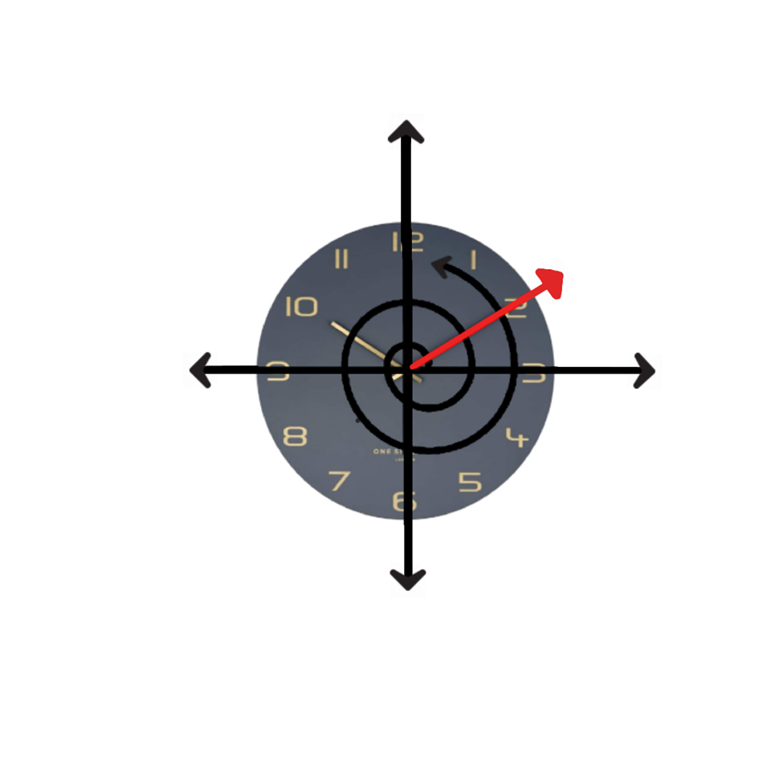
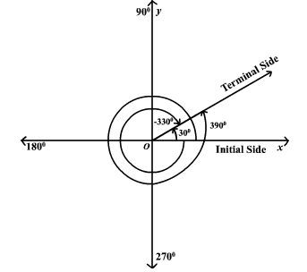

Coterminal angles
Definition: Two angles are coterminal if they are drawn in the standard position and both have their terminal sides in the same location.
What angle measurements would result in the same initial and terminal side position as a 0 degree angle? Imagine if you spin the terminal side counterclockwise once all the way around the circle until both sides of the angle point toward the 3 again. The final result looks the same as the 0 degree angle. However, the red side was rotated through 360 degrees. Therefore, 360 degrees is a coterminal angle to 0 degrees. The only difference in the measures is indicated by the rotation arrow.
Methods
There are two methods that can be used to determine if two or more angles are coterminal. The first one is to sketch the angles and determine if the terminal side is the same as per the figure above.
The second option is to determine mathematically if they are coterminal by subtracting 360 until a number between 0 and positive 360 can be reached. If the angle is negative add 360 until a number between 0 and positive 360 is reached.